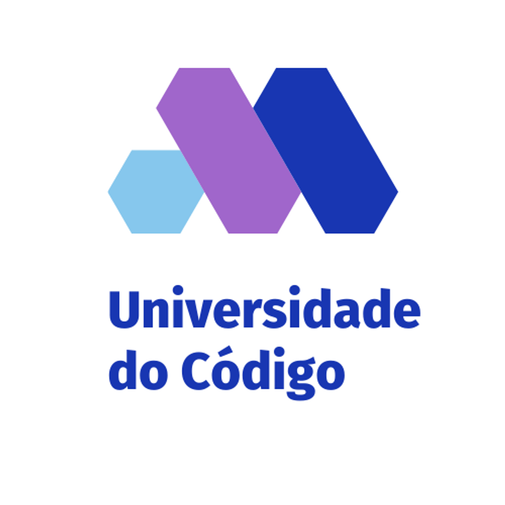

Quem Somos:
Bem-vindo à Universidade de Código, uma instituição de ensino superior dedicada a formar profissionais de TI para o mercado de trabalho. Desde a
nossa fundação, temos como missão fornecer aos nossos alunos uma formação de alta qualidade, com um ensino dinâmico e atualizado, para que
possam se destacar em uma das áreas mais promissoras do mercado.
Nossa instituição se destaca pelo seu compromisso com a excelência acadêmica e com a formação de profissionais altamente qualificados. Temos uma
equipe de professores experientes e dedicados, que buscam sempre as melhores práticas de ensino para oferecer aos alunos um aprendizado efetivo e
relevante.
5 Motivos para estudar:
- Formação completa:Na Universidade de Código, você terá acesso a uma formação completa, que abrange desde os fundamentos da programação até as áreas mais avançadas da tecnologia. Com nossos curso e programas de graduação e pós graduação, você terá uma base sólida para atuar em qualquer área de TI.
- Metodologia de ensino inovadora:Nós utilizamos uma Metodologia de ensino inovadora e eficaz, que combina teoria e prática para que você possa aplicar o que aprender em projetos reais desde o início do curso. Dessa forma, você terá uma experiência completa de aprendizado e estará pronto para atuar no mercado de trabalho.
- Professores experientes:Nossa equipe de professores é composta por profissionais experientes e capacitados, que têm uma vasta experiência no mercado de trabalho. Eles vão ajudar você a desenvolver suas habilidades e conhecimentos, orientando-o e compartilhando suas experiências profissionais.
- Conexão com o mercado de trabalho:A Universidade de Código mantém parcerias estratégicas com empresas líderes no setor de tecnologia, o que garante aos alunos acesso a estágios e oportunidades de emprego após a conclusão dos cursos. Além disso, temos um departamento de carreiras que ajuda os alunos a se prepararem para o mercado de trabalho, oferecendo suporte e orientação para o desenvolvimento de currículos e entrevistas.
- Infraestrutura moderna:Contamos com uma moderna infraestrutura, equipada com as mais recentes tecnologias e recursos, para proporcionar aos alunos uma experiência de aprendizado completa e enriquecedora. Nossas salas de aula são confortáveis e equipadas com equipamentos de última geração, e nossos laboratórios oferecem acesso a softwares e hardwares avançados para que você possa praticar e aplicar o que aprendeu em projetos reais.
Todos os direitos reservados ©
|